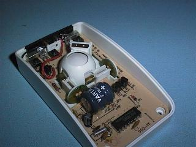
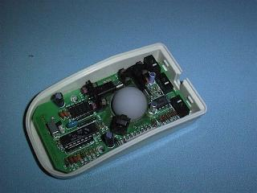
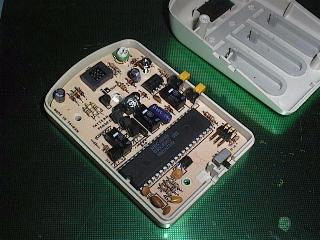

Phil Storrs PC Hardware book
Mouse input devices
Computer mouse devices fall into two basic categories
- A Mechanical Mouse has a large rubber covered ball in the bottom of it and this ball drives two "encoder wheels" that generate pulses in response to the movement of the Mouse. A variation on this is the Honeywell mechanical Mouse that has two inclined wheels set at 90 degrees to each other instead of a ball.
- An Optical Mouse uses a light beam that shines out of the bottom of the device and is reflected back into the Mouse. A reflective Mouse Mat with a series of lines on it is required, and photo cells inside the Mouse detect the movement of the device from these lines.
Mechanical Mice
The Mechanical Mouse is by far the most popular in use and here is how it works.
- As you move a mechanical Mouse by dragging it across a flat surface, a ball made of rubber with a heavy metal core, protruding from the underside of the Mouse turns in the direction of the movement.
- As the ball rotates, it touches and turns two rollers mounted at a 90-degree angle to each other. One roller responds to the X movement and the other to the Y movement. Any diagonal movement of the ball produces both X and Y movement.
- Each roller is attached to a wheel, known as an encoder and as the roller turns in response to movement of the ball, the encoder turns.
- The encoder wheels can have simple contacts on them or as is more usual, they can have slots that interrupt light beams between light sources and photo detectors.
- Two sets of contacts or two photo electric devices are used per encoder wheel so the circuitry inside the Mouse can determine which way the roller is rotating the encoder wheel.
- The circuitry inside the Mouse counts the pulses generated by the encoders and sends information about the movements to the computer via an Interface. Here it is processed, in the case of DOS applications, by a Mouse Driver routine, or in the case of Windows and it's applications, by a Mouse interface routine that is part of the Windows Operating System.
- The Mouse also has two or three buttons and these are also read by the electronics in the Mouse and when the user presses a button this action is also conveyed to the Mouse Driver routines
 
The Mechanical Mouse on the left uses mechanical contacts on the encoder wheels, the Mouse on the right uses optical encoders. The left hand Mouse is a chordless device and uses an Infrared link back to a charging station. Note the Battery in this device.
The Optical Mouse
- The Mouse has a LED light source inside that is focused into a very narrow beam that shines through a hole in the bottom of the case and strikes a special Mouse Mat.
- The mat has a series of reflective grid lines on it and they reflect the light beam back into the body of the Mouse through another lens.
- The light beam then falls onto a mirror inside the Mouse and is reflected onto an array of light sensitive sensors that detect movement.

Note the special Mouse Mat for an optical mouse
The Mouse Interface
The interface between the Mouse and the computer hardware can take one of three forms.
- A Bus Mouse requires it's own interface card plugged into a bus slot in the computer.
- Care must be exercised when configuring a Bus Mouse as it's interface card requires a small range of I/O addresses and it also requires an IRQ line.
- The default IRQ on many Bus Mouse cards is IRQ3 but as this is the standard IRQ for the COM2 Serial Port it is unlikely it is available in most installations. You may be able to use IRQ5 or IRQ2 - see the notes on Hardware Interrupts for more details.
- A Bus Mouse uses either a DB9 connector or a Miniature DIN connector. Because of the connectors used, there is often no way of telling a Bus Mouse apart from Serial or PS/2 type Mouse.
- A Serial Mouse interfaces via one of the computers Serial Ports and as modern DOS computers have two Serial Ports this should not present any problems. The Mouse is powered by using the very small amount of power supplied by the unused outputs from the Serial Port. A Serial Mouse uses the standard DB9P serial connector.
- The PS/2 Mouse was introduced with the IBM PS/2 range of computers. This Mouse requires a "built in" PS/2 Mouse Interface as part of the System Board. Most modern System boards now include a "PS/2 Mouse Interface". This interface uses a 6 pin Miniature Din connector.
The Miniature 6 pin DIN connector required for this interface may be on the System Board, or there may be an "in line" or "header" connector that requires an external DIN connector mounted on a back-plane strip. This was not always supplied as standard equipment with older boards.
Caution: The PS/2 type Keyboard also uses a 6 pin Miniature DIN connector and some System Boards may have a PS/2 Keyboard Interface on the board as well as, or istead of, a PS/2 Mouse Interface.
The pins on the PS/2 Mouse connector are assigned thus:
- Pin 1 = Data (from the Mouse)
- Pin 2 = n/c
- Pin 3 = Ground
- Pin 4 = 5 volt supply
- Pin 5 = Clock (from the Mouse)
- Pin 6 = n/c
The Mouse Driver file
When DOS was first created the Mouse device did not exist and so no DOS support for this device was built into the DOS Operating System, or into the computers BIOS. This means a Mouse Driver file must be installed when the computer is booted and this add's the Mouse support to the operating system.
Devices like the Mouse can be supported at the DOS level by a file loaded from either the CONFIG.SYS or AUTOEXEC.BAT file. In the early days of DOS, Mice devices were supplied with both a .SYS and a .COM file, but only one of them was used. A .SYS file needed to be loaded from the CONFIG.SYS file with a line that read DEVICE = MOUSE.SYS (or whatever other name the .SYS file may have).
A .COM file is loaded from the AUTOEXEC.BAT file, and this is done by simply including the line mouse (or whatever other name the .COM file may have) in the AUTOEXEC.BAT file. Today Mouse support at a DOS level is only provided by a .COM file, and Windows 3.11 and later Operating System have Mouse support built in and do not need a Mouse support file.
Important: If you run a DOS session under Windows95 or later Operating System, you will usually need to load a Mouse Driver from the AUTOEXEC.DOS file. The AUTOEXEC.DOS file is used by Windows95 and above to provide support for heritage devices when going back to DOS.
There are quite a few brand of Mice available but most of them are compatible with one, or both, of the first two Mice available for the PC computer.
The Microsoft Mouse was the first one available and it was a two button mouse.
A company called Mouse Systems then produced a three button mouse.
Originally each of these Mice required their own particular Mouse driver files but as other companies made Mice compatible with either of these original Mice, the Mice driver files got much smarter and could usually be made to emulate either type of Mouse. Some Mice have a switch on the bottom of the device that configures the Mouse as either a two button (Microsoft Mouse) or as a three button (Mouse Systems) Mouse. During the evolution of the Mouse at least one brand had a means of software switching (at boot up) between being a two button or a three button Mouse. It's Mouse driver file would only work with that brand of Mouse. Problems with older Mice and Mouse driver files are not uncommon, not all so called compatible Mice will work with Mouse driver files from other brands of Mouse.
The BIOS in many modern System Boards finds the Mouse connected to one of the Serial ports, or a PS/2 Interface, and uses it with the CMOS Setup screens. This facility does not supply DOS Mouse support, it only allows the Mouse to be used with the CMOS setup routines.
An alternative to the Mouse is the Track Ball but this is really only a Mouse turned on it's back and the user rotates the ball directly, rather than moving it over a flat surface. Another device that has been around for some years but has seen little use is the Pen Mouse. Many Lap-Top computers come with a tiny built in Mouse device that looks a bit like a very small joystick.
Mouse Maintenance
Mechanical Mice require regular cleaning as they suffer from dirt build-up on the ball and the rollers. This problem can be reduced by using a clean Mouse Mat in a clean work environment. When cleaning a mechanical Mouse you must remove the ball from the Mouse (or Track Ball), clean the ball with a lint free tissue and alcohol, and clean the three rollers inside the device with cotton buds and alcohol. The Honeywell Mouse does not suffer from the problem of dirt as much as the conventional Mice with a ball, or a Track Ball, and Optical Mice should need no maintenance at all.
The Digitizer Pad
An alternative pointing device used by most serious CAD users is the A Digitizer Pad. These devices are usually connected via a Serial port.
Important: A Joystick is not a Mouse device.
A Joystick is connected to the Games Port and it generates analog signals (variable frequency signals) proportional to the X and Y position of the stick, wheel or pedal. A Mouse device generates pulses in response to movement of a ball or similar device.
{kind=link}
{kind=link}
{kind=link}
{kind=link}
{kind=link}